Exporting models
This guide walks through the full end-to-end process — from sourcing a model all the way to viewing your custom export running in the game.
1. Blender setup
Before following this guide, make sure Blender and the addon are installed. The home page covers both steps:
Once that's done, return here and continue with step 2.
2. Getting a model
The exporter works with any Blender scene that has a single armature with meshes parented to it. There are three common ways to end up with one:
Option A — Edit an existing game model
The simplest path. Follow the importer guide to load a Pokémon Colosseum or XD model, then edit it directly in Blender (re-texture, re-pose, retopologise, whatever you like). All the metadata the exporter needs (animation slots, shiny params, body map) is already set on the armature, so you can skip most of the prep work later.
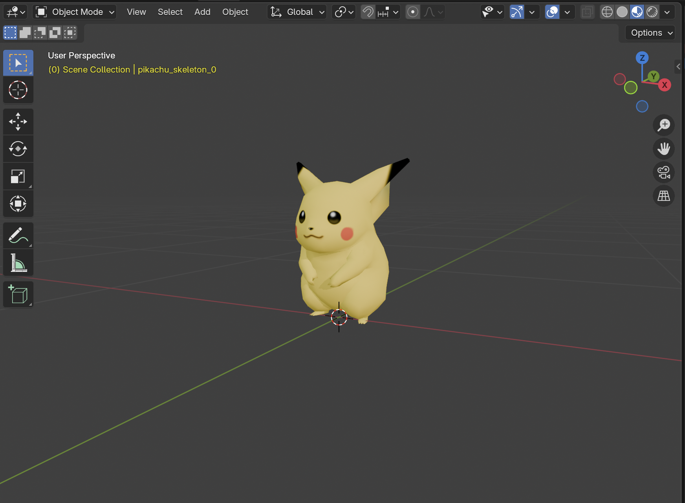
Option B — Import a model from another source
This can be other Pokémon games, other game series, or models from anywhere else. Many
modern Pokémon titles (Sun/Moon onwards, Sword/Shield, Legends Arceus, Scarlet/Violet, etc.)
have community-maintained rips available as .glb or .fbx files,
and the same formats are used widely outside Pokémon too. Blender opens these natively —
use File → Import → glTF 2.0 (.glb/.gltf) or
File → Import → FBX (.fbx).
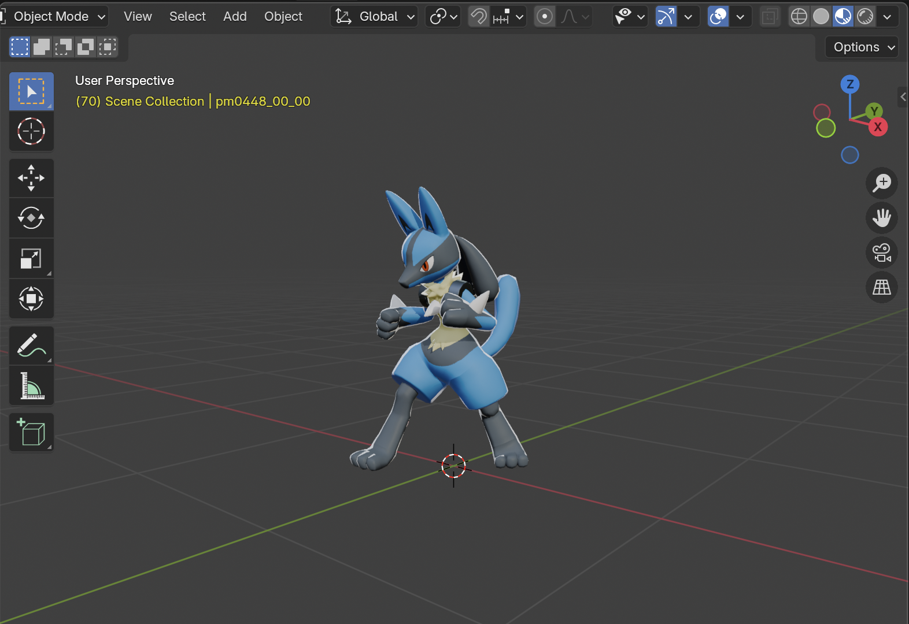
.glb rip via File → Import → glTF 2.0.Rips from other games arrive without any of the metadata the exporter expects. The preparation step below adds it automatically.
Option C — Build a model from scratch
Fully custom models work too. The constraints are the same as for any rip: you need an armature, meshes parented to it, materials with image textures, and a face count well under the game's limits. See Checking compatibility for the full feature list.
3. Setting up the scene
The exporter writes the entire Blender scene to the output file (with one narrow exception: hidden cameras are skipped). That means before you export, the scene needs to contain only the things you want in the game model. This step is about cleaning up.
Step 1 — Delete the default cube, light, and camera
When you opened Blender, it created a default scene with a Cube, a Light, and a Camera. If you're working with a freshly imported model, these may or may not still be around — either way, delete them.
In the Outliner (top-right panel), click on each unwanted object and press X in the viewport (or Delete on the keyboard) to remove it. Alternatively, right-click the object and choose Delete from the drop-down menu. Confirm the deletion if Blender asks.
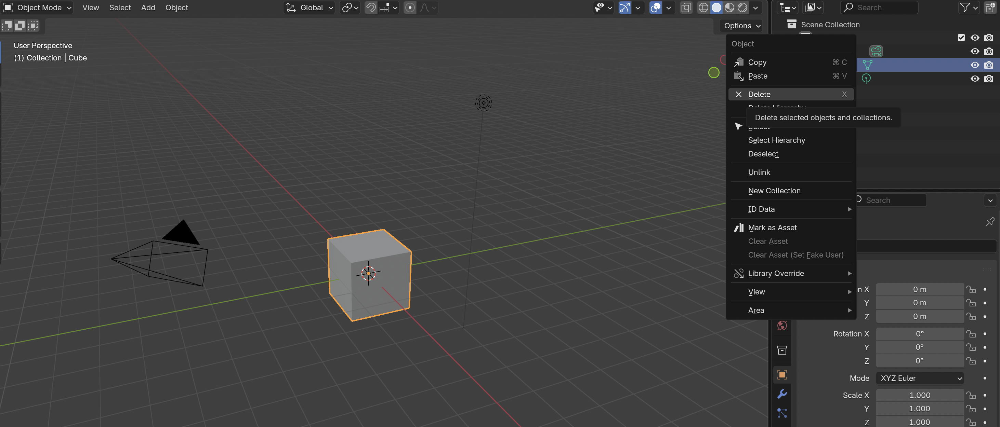
Step 2 — Confirm the scene structure
Import the model as described in section 2 and make any desired modifications.
What should remain is one Armature with the model's meshes parented to it. In the Outliner, the armature is the entry with a stick-figure icon; meshes appear nested underneath it (click the triangle to the left of the armature to expand).
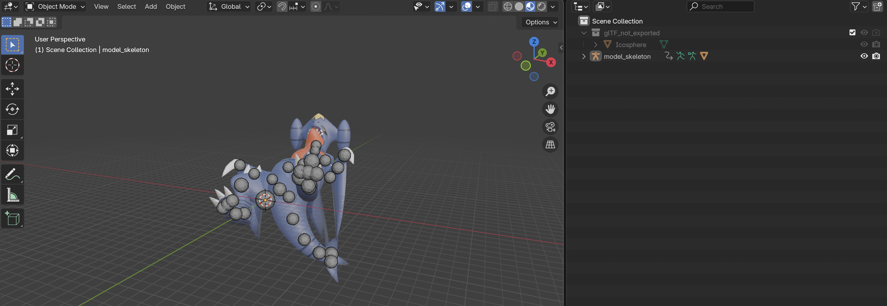
Step 3 — Make sure the model faces the right way
In Blender, your model should be standing upright (Z is up) and facing along the negative Y axis (toward the default camera position when looking from front). If the model is lying on its side or facing backwards, rotate the armature to fix it.
It's common for other software to use the Y axis as the up axis. If the model is lying
on the ground, then it's most likely that a rotation of 90 degrees around the X axis will
convert it to Blender's Z-up coordinates: select the armature, press R,
X, type 90, and press Enter.
To rotate more generally: select the armature, press R, then optionally an
axis key (X, Y, or Z), type the angle in degrees (e.g.
90), and press Enter.
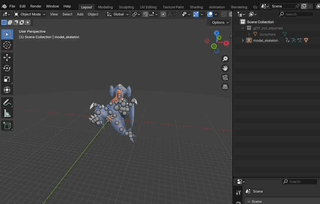
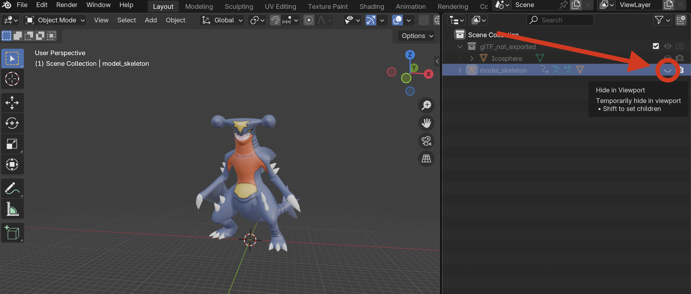
Step 4 — Scale the model to match real-world dimensions
Blender measures things in metres. The plugin expects the model to be sized like the real thing — for Pokémon, that's the species' official height. A scale mismatch shows up in-game as a Pokémon that's tiny or enormous compared to the rest of the cast.
- Click the armature in the viewport.
- Press N to open the sidebar on the right of the viewport.
- Switch to the Item tab. The Dimensions section shows the model's current X / Y / Z size in metres.
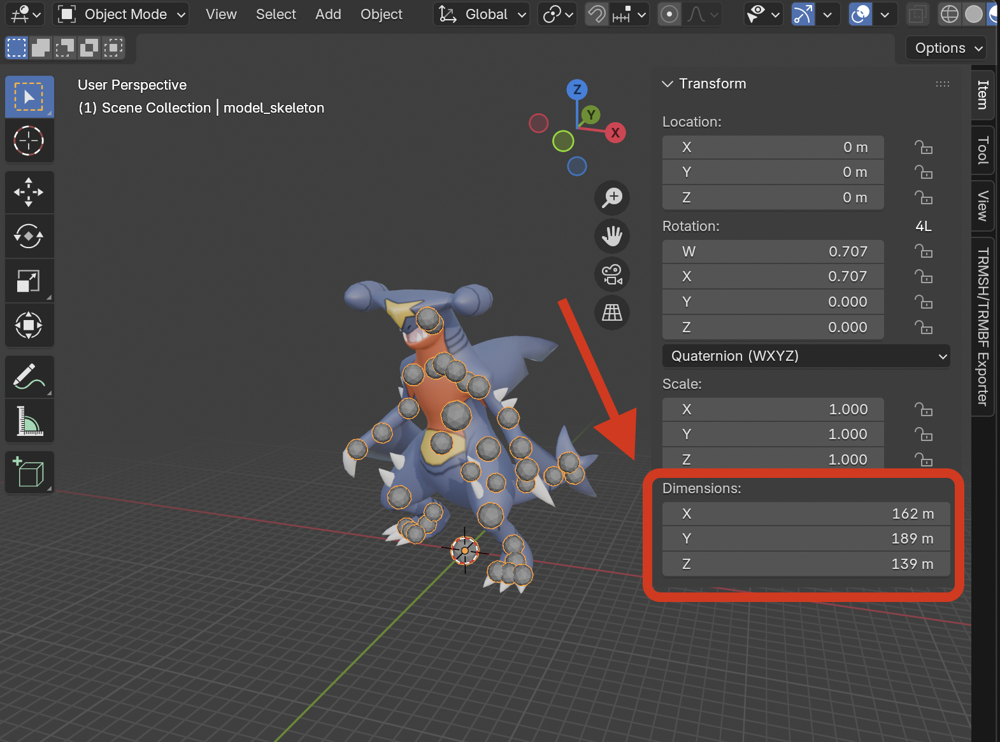
Look up the Pokémon's official height (Bulbapedia is a good source). For most Pokémon, match the Z dimension (height) to the official metres value. For long serpentine Pokémon like Gyarados or Rayquaza, the official "height" is actually body length — use the Y dimension instead.
To scale: with the armature selected, press S, type the scale factor (e.g.
0.5 to halve all 3 dimensions at the same time), and press Enter.
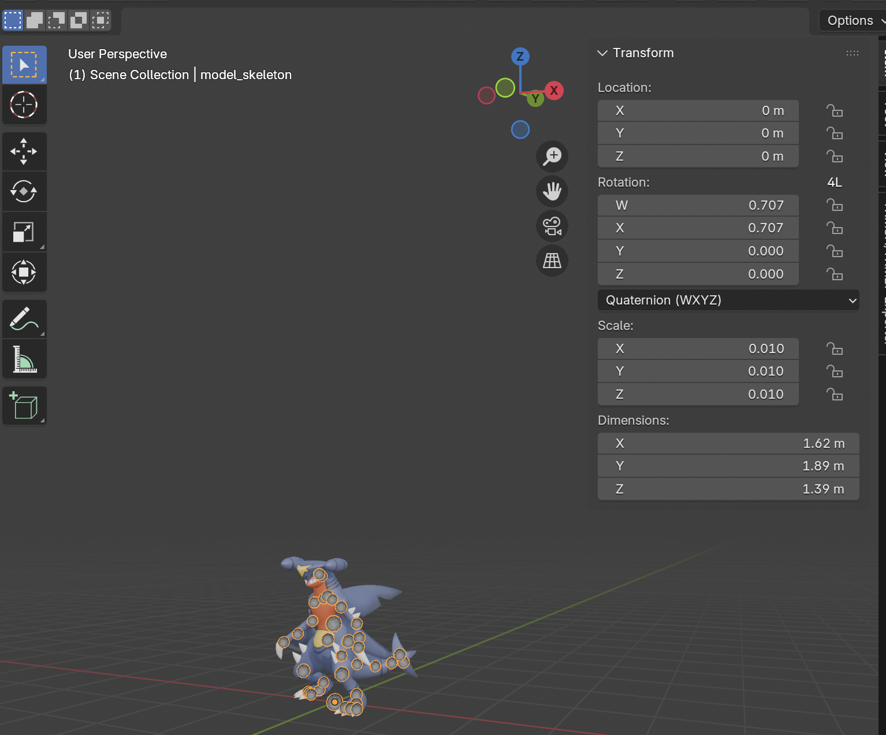
4. Checking compatibility
The exporter understands a specific subset of Blender features. Anything outside that subset is either ignored or — for limits like polygon count — can cause the model to fail to load in-game. This section walks through what's supported, organised the way Blender itself groups things.
Legend: ✓ Supported ⚠ Partial ✗ Not supported
Scene objects
What kinds of Blender objects the exporter pays attention to.
| Object type | Support | Notes |
|---|---|---|
| Armature | ✓ | Each armature in the scene becomes one model in the output file. |
| Mesh (parented to armature) | ✓ | Has to be parented to an armature, otherwise it's ignored. |
| Mesh (not parented) | ✗ | Parent it to the armature first. |
| Camera (Perspective) | ✓ | Position, field of view, clip planes, and Track To target are exported. |
| Camera (Orthographic) | ✓ | Ortho scale is written into the field-of-view slot. |
| Camera (Panoramic) | ✗ | No GameCube equivalent. |
| Light (Sun) | ✓ | Color, direction, brightness. |
| Light (Point) | ✓ | Color, position. |
| Light (Spot) | ✓ | Color, position, target. |
| Light (Area) | ✗ | No GameCube equivalent. |
| Empty | ✗ | Empties are only meaningful internally (camera/light targets). |
| Curves / Text / Volumes | ✗ | Convert to mesh first (Object → Convert → Mesh). |
Mesh data
The geometry, UVs, and color information attached to your meshes.
| Feature | Support | Notes |
|---|---|---|
| Vertices & faces | ✓ | All faces are triangulated automatically on export. |
| Normals (auto) | ✓ | Per-vertex normals are exported. |
| Custom split normals | ✓ | Read from mesh loops. |
| UV maps | ✓ | Up to 8 UV layers per mesh (GameCube hardware limit). |
| Vertex colors | ✓ | Float-color attribute layers. |
| Multi-material meshes | ✓ | Auto-split per material slot on export. |
| Shape keys (morph targets) | ✗ | Not yet implemented. |
Skinning
How meshes attach to bones for animation.
| Feature | Support | Notes |
|---|---|---|
| Vertex groups (multi-bone) | ✓ | Standard skinned envelope. The prep script limits to 3 influences per vertex and quantises weights to 10% steps for GameCube efficiency. |
| Vertex groups (single bone) | ✓ | Rigid bind — all verts attached to one bone. |
| No vertex groups | ✓ | Mesh is bound to whichever bone it's parented to. |
| Armature modifier | ✓ | Required for skinning to work. |
Materials
The Principled BSDF shader plus image textures cover almost everything the exporter can handle. Procedural textures and custom node groups are ignored — bake to image if you need them.
| Feature | Support | Notes |
|---|---|---|
| Principled BSDF — Base Color | ✓ | Diffuse color. |
| Principled BSDF — Specular Tint | ✓ | Reverse-mapped to absolute specular color. |
| Principled BSDF — Alpha | ✗ | Every material is exported as opaque. See note below. |
| Image Texture node | ✓ | All GameCube texture formats supported. |
| Texture alpha channel | ⚠ | Image alpha is encoded faithfully (for hard-edged cutouts like the ring around an iris), but the material itself is always opaque. |
| Procedural textures (Noise, Checker, etc.) | ✗ | Bake to image texture first. |
| Custom node groups | ✗ | Only specific nodes the exporter recognises are read. |
Animations
| Feature | Support | Notes |
|---|---|---|
| Bone actions (location / rotation / scale) | ✓ | Both Euler and Quaternion rotation modes are supported. |
| Material color & alpha actions | ✓ | Animated material properties. |
| Texture UV scroll / scale | ✓ | Animated texture offset and scale. |
| Camera animations | ✓ | Position, target, FOV, roll, clip planes. |
| NLA strips | ✓ | Actions referenced by NLA strips are exported. |
| Shape key actions | ✗ | Not yet implemented. |
| Drivers | ✗ | Bake to keyframes first. |
Constraints
| Constraint | Support | Notes |
|---|---|---|
| Inverse Kinematics (IK) | ✓ | Chain length and pole target. |
| Copy Location | ✓ | |
| Copy Rotation | ✓ | |
| Track To | ✓ | |
| Limit Rotation | ✓ | Min/max per axis. |
| Limit Location | ✓ | Min/max per axis. |
| Other constraints | ✗ | Ignored — no GameCube equivalent. |
Hardware limits
Even when every feature you use is supported, the GameCube has hard runtime limits the model must stay under. The exporter rejects scenes that violate these (with a clear error message); the preparation script in the next step handles most of them automatically.
| Limit | Value | Notes |
|---|---|---|
| Texture size | ≤ 512×512 px | Larger textures are downscaled by the prep script. |
| Bone weights per vertex | ≤ 4 | Prep script caps to 3 by default to leave headroom. |
| Polygon count | ~15,000 faces (rough) | Higher counts may still work — the upper boundary isn't precisely measured. |
| File size | ~500 KB (target) | Original Pokémon range from 65–430 KB. Bigger files may not load. |
| Animation timing offset | 0 | Actions must start at frame 0. |
| Armature world transform | Identity | All transforms applied (no scale, rotation, or translation on the armature object itself). The prep script handles this automatically. |
5. Preparing the model
The preparation script handles the bulk of the prep work automatically and should be run in all cases. For models you imported through this addon, most of the prep work is already done — but the script should still be run. For models from anywhere else (GLB rips, custom models), it handles much more.
Step 1 — Open the Scripting workspace
At the top of Blender, click the Scripting tab in the workspace bar. The layout changes to show a text editor, an interactive console, and an info log.
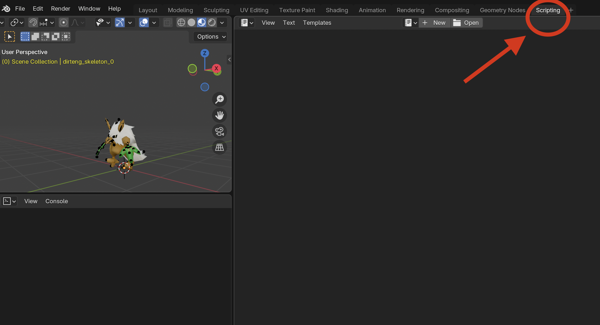
Step 2 — Open the preparation script
In the text editor at the top of the workspace, click Open and browse
to scripts/prepare_for_export.py inside the plugin's installation folder.
To find the plugin's installation folder:
- macOS:
~/Library/Application Support/Blender/4.5/extensions/user_default/ - Windows:
%APPDATA%\Blender Foundation\Blender\4.5\extensions\user_default\ - Linux:
~/.config/blender/4.5/extensions/user_default/
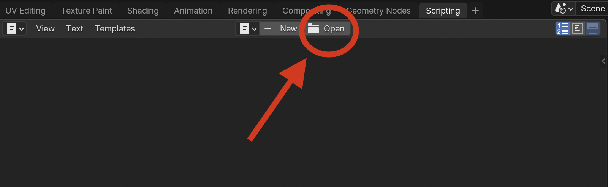
prepare_for_export.py from the plugin's scripts/ folder.Step 3 — Run the script
With the script open, click the Run Script button (or press Alt+P with the cursor inside the script). Wait a few seconds — the info log at the bottom will show what it did.
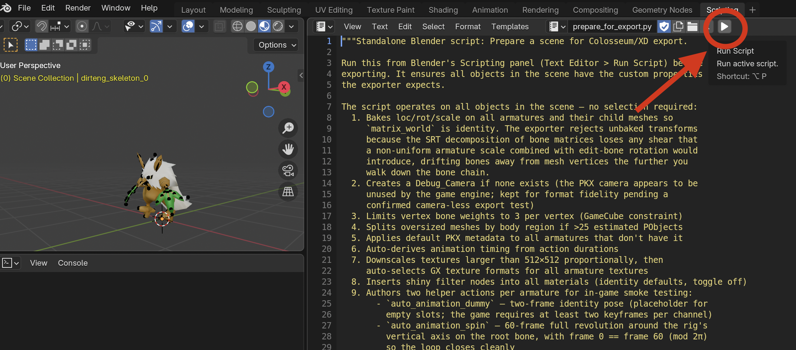
What the script does
- Joins all child meshes of each armature into one mesh — this dramatically reduces the chance of hitting the game's "too many surfaces" limit.
- Caps bone weights at 3 per vertex and rounds weights to 10% steps.
- Adds the 4 battle lights the game expects (one ambient + three sun lights).
- Downscales oversized textures to 512×512 or smaller, then picks the best GameCube texture format for each one.
- Creates a placeholder camera (the game doesn't actually use it).
- Adds PKX metadata to the armature (species ID, animation slots, shiny params, body map) — visible afterward in the PKX Metadata panel on the armature.
- Inserts shiny preview nodes into materials so you can toggle the shiny appearance in Blender.
- Authors two helper actions — an identity pose and a 60-frame spin — useful for smoke-testing the export.
.dat model,
skip to section 6. The remaining prep steps are only required
for .pkx models.
Step 4 — Set the PKX metadata
Select the armature and open the Properties editor's Object Properties tab (orange square icon). Scroll down to the PKX Metadata panel.
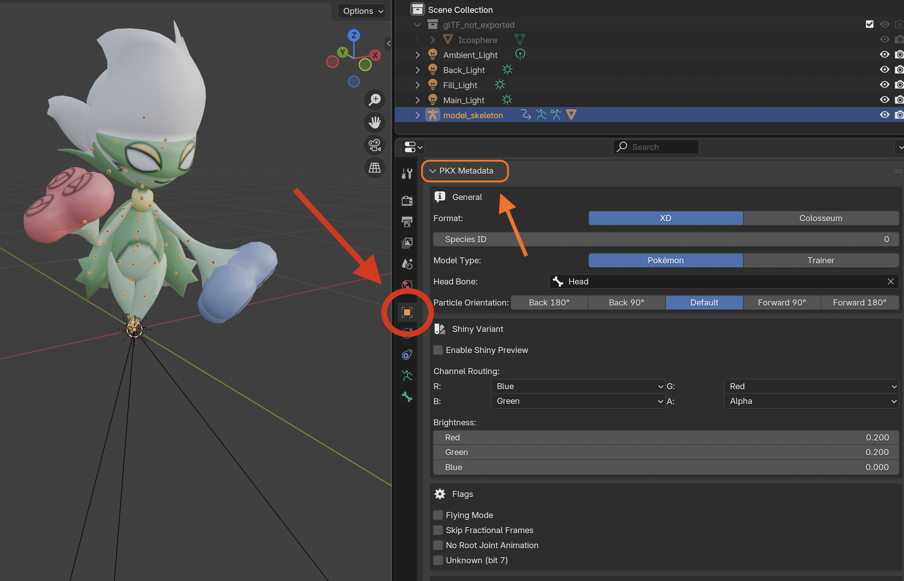
Key things to set:
- Format —
XDorCOLOSSEUM, depending on the target game. - Model Type —
POKEMONorTRAINER. - Head Bone — the bone the camera locks to (auto-detected by name; verify it's correct).
- Animation slots — see below.
- Shiny properties — set the channel routing and brightness offsets, and preview what the shiny will look like in the viewport.
Step 5 — Set the body map
The body map tells the game where on your model to attach particle effects, status icons (sleep Z's, confusion stars), and the camera target. Set these in the Body Map section of the PKX Metadata panel.
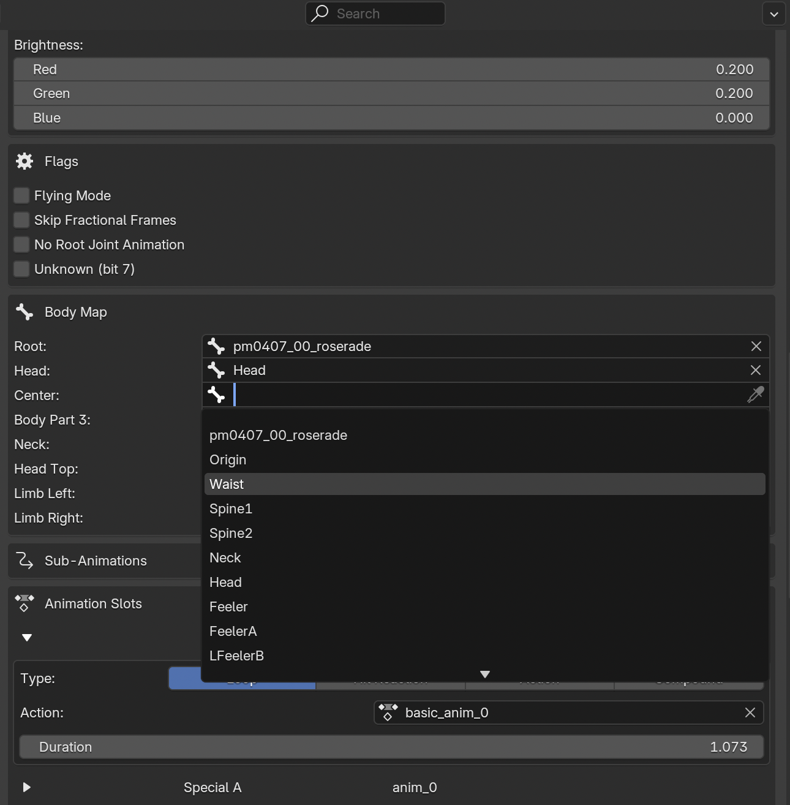
Bone slots:
- Root — the root bone (auto-filled).
- Head — the bone the in-game camera follows. The most important slot to get right. The prep script tries to auto-detect by name but verify it.
- Center — the model's centre of mass.
- Body 3 — unknown, set to origin for now.
- Neck
- Head Top
- Limb Left, Limb Right — usually the left and right arms, or closest equivalent.
- Secondary 8–11 — leave empty.
- Attach A–D — leave empty.
Step 6 — Assign actions to animation slots
Pokémon battle models have 17 animation slots. Each slot gets a Blender Action assigned to it.
| Slot | Used for |
|---|---|
| Idle | Default stance — also the fallback for moves with no animation. |
| Physical A | Most physical-damaging moves. |
| Special A | Most special-damaging moves. |
| Damage | Hit reaction (taking damage). |
| Faint | Fainting / KO animation. |
| Physical B–E, Special B–C | Variants triggered by specific moves (Magnitude, Triple Kick, Weather Ball, etc.). E.g. progressively more intense variants of the animation. You can set these to the same as the A variant. |
| Remaining slots | Other animation slots — suggested to leave empty. |
In the PKX Metadata panel, click the dropdown next to each slot and pick the matching Action.
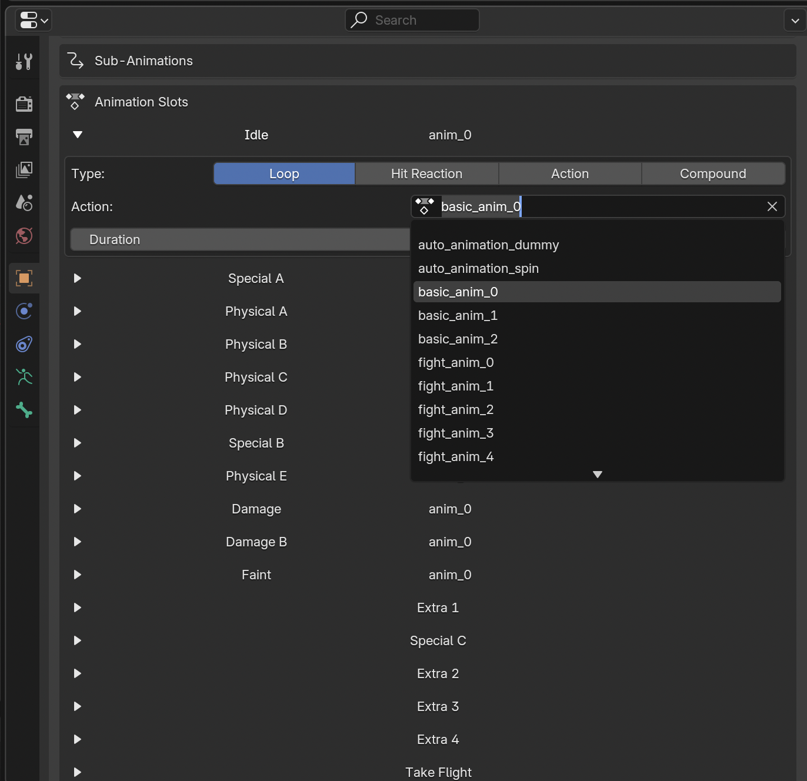
Step 7 — Re-run the script
After assigning actions, run the script again. It auto-derives animation timing values from the action durations you assigned. The timings can be adjusted afterward if necessary, but in most cases the auto-assigned values should be fine.
6. Exporting the model
Once the scene is set up and prepared, the export itself is a single menu choice.
Step 1 — Open the export dialog
In Blender, open the File menu, hover over Export, and click Gamecube model (.dat).
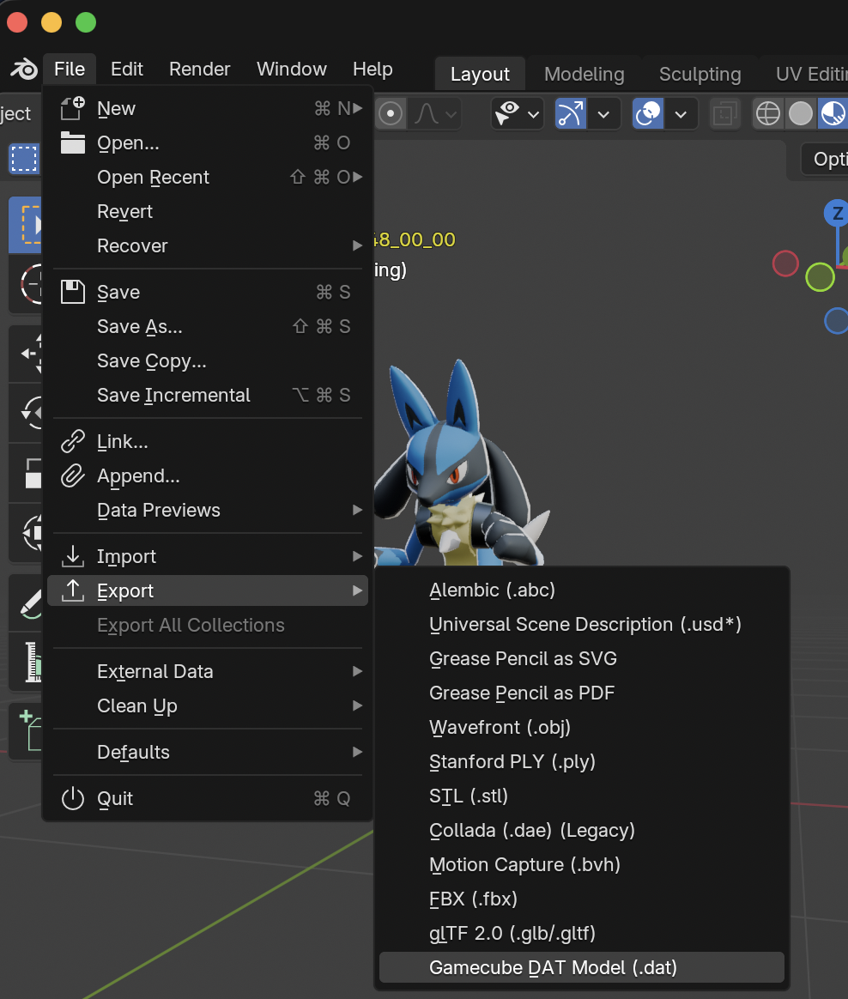
Step 2 — Pick output format and location
Type the filename and choose the extension based on what you want:
| Extension | Use for |
|---|---|
.dat |
A bare model file with no header. Used for overworld props and NPCs. Includes every action in the scene, so delete unused actions first or the file will be huge. |
.pkx |
A Pokémon or trainer battle model, with the header carrying animation slots, shiny colors, body map, and species ID. Requires the PKX metadata set in step 5 above. |
.fsys |
Replace the model inside an existing .fsys archive. The
fastest way to test in-game — see the next section. Double-click
an existing .fsys in the export dialog to overwrite it. |
Step 3 — Click Export
The export takes a few seconds. When it finishes, you'll have a usable model file at the path you chose. The next section covers getting it into the game.
Known limitations
- Map / scene models lose features the exporter doesn't yet support (fog, lighting, collision data).
- Particle (GPT1) effects are not exported.
- Optimisations automatically applied by the preparation script may create visual issues.
7. Importing the model back into the game
You have a model file. Now you need to get it back into a playable copy of the game. The flow uses Dolphin's "boot from folder" feature — no ISO rebuild needed — together with the project's browser-based FSYS Tool for swapping the model into an existing archive.
Step 1 — Extract the game's filesystem (one-time setup)
Follow the importer's file system extraction guide to extract the game's contents to a folder. If you already did this for the importer walkthrough, you can reuse the same folder.
Step 2 — Find the .fsys you want to replace
Inside the extracted folder, navigate to the files/ subfolder. Find the
pkx_*.fsys archive for the Pokémon or trainer you want to overwrite.
Step 3 — Back up the original
Before overwriting anything, copy the .fsys file to a safe place. If your
export doesn't work in-game, you can restore the original by copying the backup back.
Step 4 — Choose your replacement method
Pick whichever fits your situation:
Method A — Direct .fsys export from Blender (simplest)
If the archive you're replacing has exactly one model entry inside it (true for every
pkx_*.fsys), Blender can write the modified archive in one step.
- In Blender, run the export (step 6).
- In the file dialog, navigate to the folder containing the
.fsysyou want to replace. - Double-click the existing file in the dialog — this picks it as the output target.
- Click Export.
The plugin overwrites the archive in place, replacing the original model entry with yours and preserving every other entry in the archive.
Method B — Use the FSYS Tool (extract / swap / repack)
For archives with more than one model entry, archives where you want to inspect or modify other files alongside the model, or when you just prefer working with loose files, use the project's FSYS Tool. It runs entirely in your browser — no installation, no upload, everything stays local.
- Export your model from Blender as
.pkx(or.dat), not.fsys. Save it somewhere you can find it. - Open the FSYS Tool in your browser.
- Switch to the Extract tab. Pick the
.fsysarchive you want to modify and click Extract archive. The tool downloads a.zipfile — unpack it to get a folder containing every entry from the archive, plus a<name>-manifest.jsondescribing the layout. - Swap the model. Inside the unpacked folder, find the entry file
corresponding to the model (typically the
.pkxor.datfile). Delete it and replace it with your exported model, keeping the exact same filename. The manifest doesn't need to be edited — only the file content. - Switch to the Repack tab. Drag the folder into the drop zone (or
use the picker), set the output filename to match the original (e.g.
pkx_065.fsys), and click Repack archive. A new.fsysdownloads. - Drop it into the game's
files/folder, overwriting the original (which you already backed up in step 3).
Step 5 — Boot the modified game from main.dol
In your file browser, open the extracted folder, go into sys/, and
double-click main.dol. Dolphin launches the game using your
modified files — without needing to rebuild the ISO.

sys/main.dol to boot the modified game.8. Troubleshooting
If you hit a problem the docs don't cover, ask on the community Discord: discord.gg/xCPjjnv. Include screenshots of your scene (Outliner + Material Properties at minimum), the exact error message Blender showed, and the model file you tried to export.